Tanohata
Tanohata · Iwate
Tanohata
Highlighted on the Iwate map.
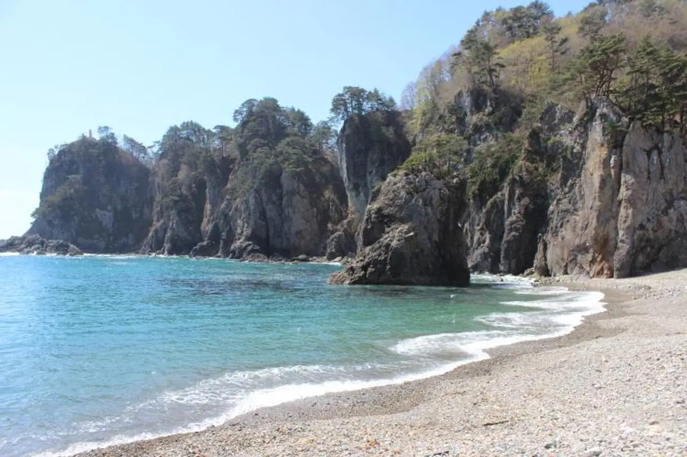
Stay
ホテル羅賀荘
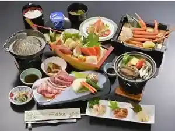
Hoteru Ra Ga Sou
Hotel in Tanohata, Iwate.
Dining
ロレオール田野畑
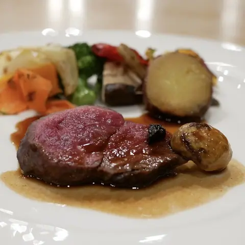
Roreooru Tanohata
French restaurant in Tanohata, Iwate.
北川食堂
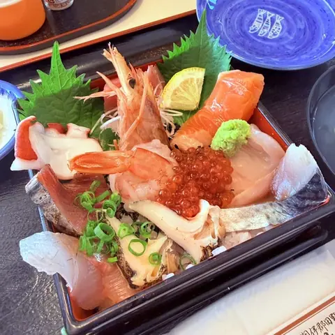
Kitagawa Shokudou
Seafood restaurant in Tanohata, Iwate.
道の駅たのはた 思惟の風
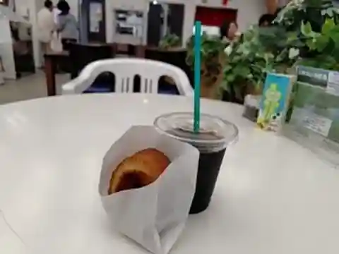
Michi No Eki Tanohata Shii No Kaze
Roadside-station eatery in Tanohata, Iwate.
北山崎レストハウス
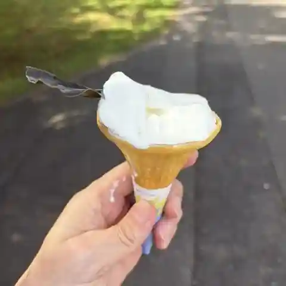
Kitayama Saki Resutohausu
Shokudo diner in Tanohata, Iwate.
松乃屋食堂
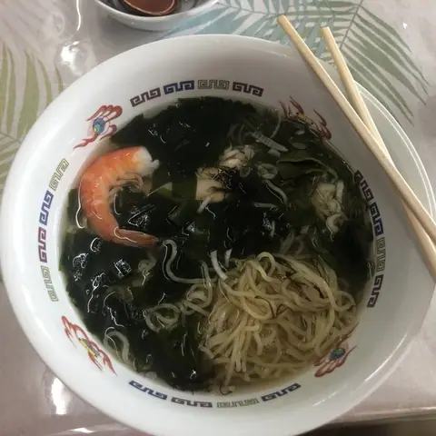
Matsuno Ya Shokudou
Shokudo diner in Tanohata, Iwate.
浜茶や食堂
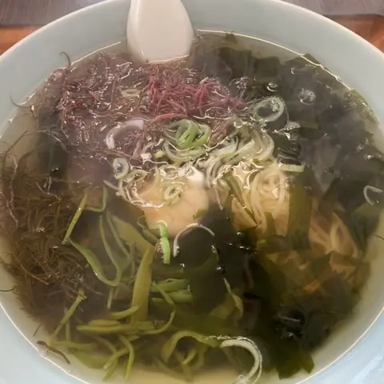
Hama Cha Ya Shokudou
Shokudo diner in Tanohata, Iwate.
Cafe くも
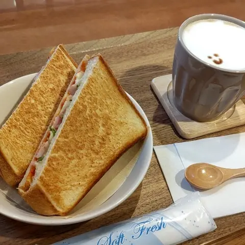
Cafe Kumo
Café in Tanohata, Iwate.
ラーメン風風
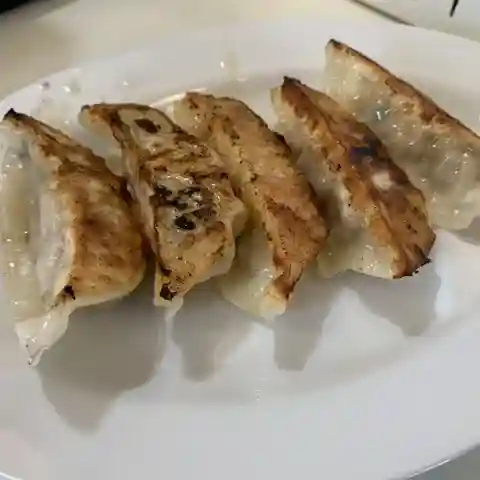
Raamen Kaze Kaze
Ramen shop in Tanohata, Iwate.
白花シャクナゲ荘
Shirobana Shakunage Sou
Seafood restaurant in Tanohata, Iwate.
PATISSERIE FIERTE
Patisserie Fierte
Sweets shop in Tanohata, Iwate.
ひらいが海荘
Hiraiga Umi Sou
Inn restaurant in Tanohata, Iwate.
たい寿司
Tai Sushi
Sushi restaurant in Tanohata, Iwate.
ハックルカフェ
Hakkurukafe
Bakery in Tanohata, Iwate.
Sights
Kitagawa Shokudo Gochiso-don
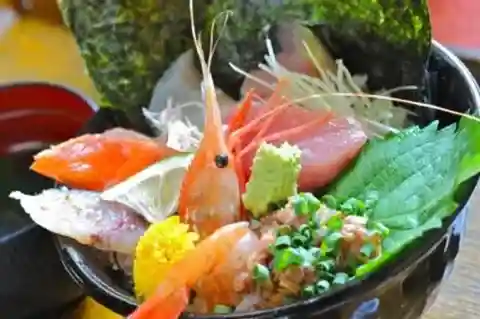
The "5-layer rice bowl", which was created after the geological formations in Tanohata, is a popular menu item with rice, strawberry stew, seaweed, rice, and a seafood delicacy piled up in five layers.
Kitayamazaki Rest House
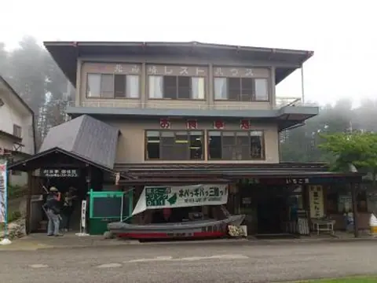
Kitayamazaki Rest House has a souvenir shop on the first floor and a restaurant on the second and third floors.
Loreol Tanohata
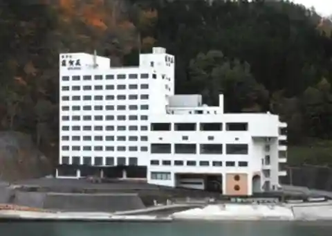
The sea and vast land of Sanriku. Iwate, blessed with great nature, is truly a treasure trove of ingredients.
Banya Cooking Experience
Enjoy freshly caught sea urchin, wakame seaweed, sea squirt, and more by cutting them yourself at the banya or on the Sappa boat.
Tanohata Dairy Products
Tanohata milk, ice cream, and yogurt are popular for their rich flavor and are made from milk produced with great care by Tanohata dairy farmers, and are the specialty products of Tanohata Village.
Shii Ohashi Bridge
With a total length of 315m and a height of 120m, it is one of the largest "Reverse Rose Bridges" in Japan, spanning the Matsumae swamp.
Kitayamazaki Cliff Cruise Tourist Boat
You can enjoy the impressive view of Kitayamazaki, a scenic spot representing Sanriku Fukko National Park, from the ocean.
Kitayamazaki
"Kitayamazaki", which has large cliffs approximately 200m high that extend for approximately 8km, boasts the most impressive coastal beauty among all the coastal scenery in Japan, and was ranked in the coastal category of the tourism resource evaluation…
Sugakubo deer dance
The Sugakubo Deer Dance, which has been designated as an Iwate Prefecture Intangible Folk Cultural Property, is a performing art in which participants wear a deer head that resembles a real deer and dance bravely like a wild deer.
Haipe Koikorobe Cretaceous Fossil Site
Hype Koikorobe Cretaceous Fossil Locality
Tanohata Village Folklore Museum
This museum focuses on materials from the Sankei Uprisings of 1847 and 1853, which are said to be the pinnacle of the peasant uprisings in terms of logic, leadership, and organizational skills.
Kitayamazaki Sappa Boat Adventures
This is a thrilling tour of Kitayamazaki's cliffs and sea caves aboard a sappa boat, a small rock boat still in use by fishermen.
Unosu Cliff
The Unosu Cliff, which offers a view of five layers of cliffs approximately 200m high, has a raised coast unique to the northern Rikuchu coast.As the name suggests, the cliffs are nesting sites for sea cormorants and eagles.
Omiya Kagura
Omiya Kagura, which descends from Yamabushi Kagura, is designated as an Intangible Folk Cultural Property by Iwate Prefecture, and is dedicated to the lion head of Omiya Gongen, celebrating people's health and praying for warding off troubles.